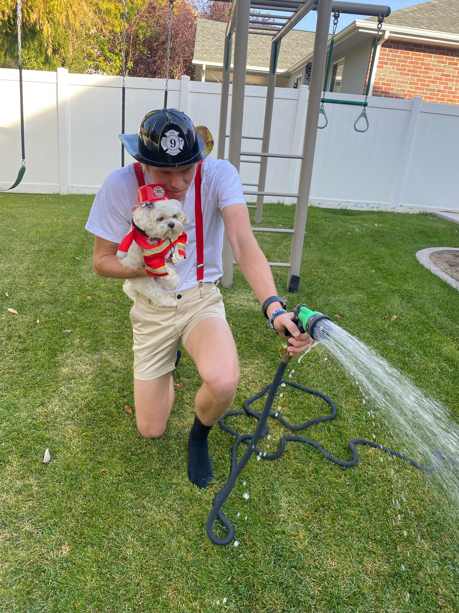

FireWomen Floof is an amazing spectical to see. She has the strength of Hercules, the mind of a philosopher, and the courage of a young warrior. Not only does a floof save the day, but she looks stylish while doing it. It is no wonder everybody is in awe of her floofiness. Below are some actions shots of a floof when on the job saving lives.
Be weary, they aren't for the faint hearted...

Back to Top